1993
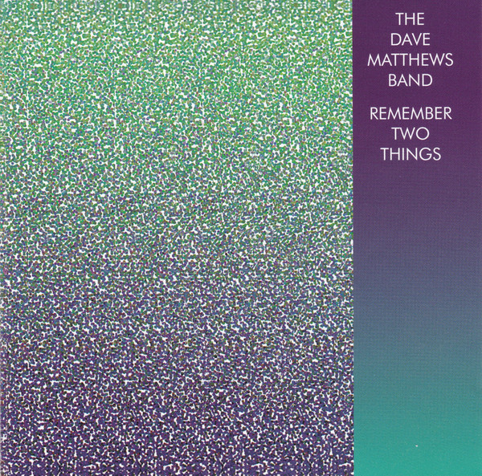
Remember Two Things
Remember Two Things is the first full-length album release by the Dave Matthews Band. It was released independently through the band's own Bama Rags label on November 9, 1993. The album received wider release with a reissue by RCA Records on June 24, 1997, and was certified platinum by the RIAA in 2002. Consisting of live tracks interspersed with studio recordings, the album contains many songs that have remained setlist staples for the band.
1994
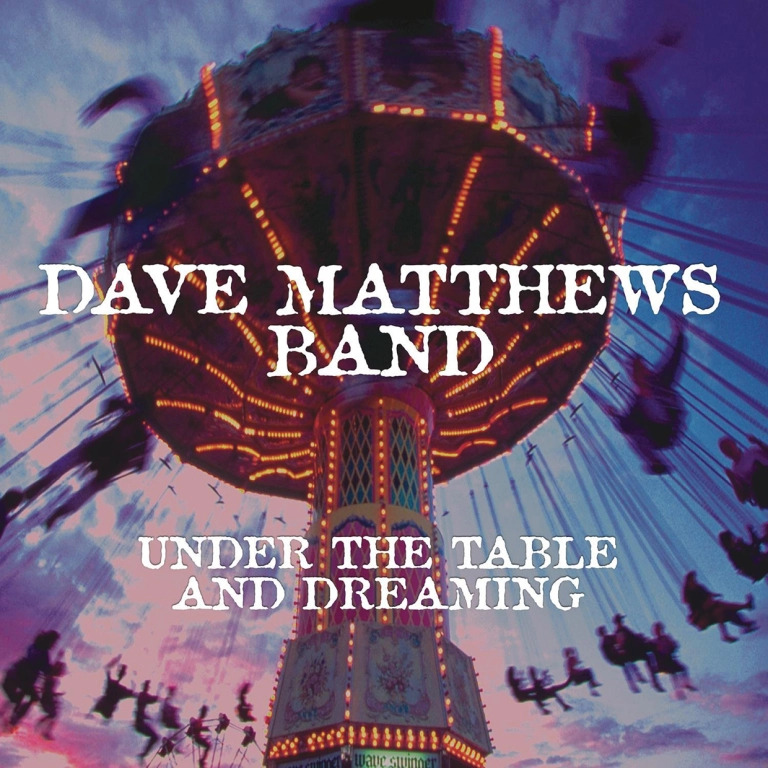
Under the Table & Dreaming
Under the Table and Dreaming is the debut studio album by the American rock band Dave Matthews Band, released on September 27, 1994. The album's first single was "What Would You Say", featuring John Popper of Blues Traveler on harmonica. Four other singles from the album followed: "Jimi Thing", "Typical Situation", "Ants Marching", and "Satellite". By March 16, 2000, the album had sold six million copies, and was certified six times platinum by the RIAA.
1996
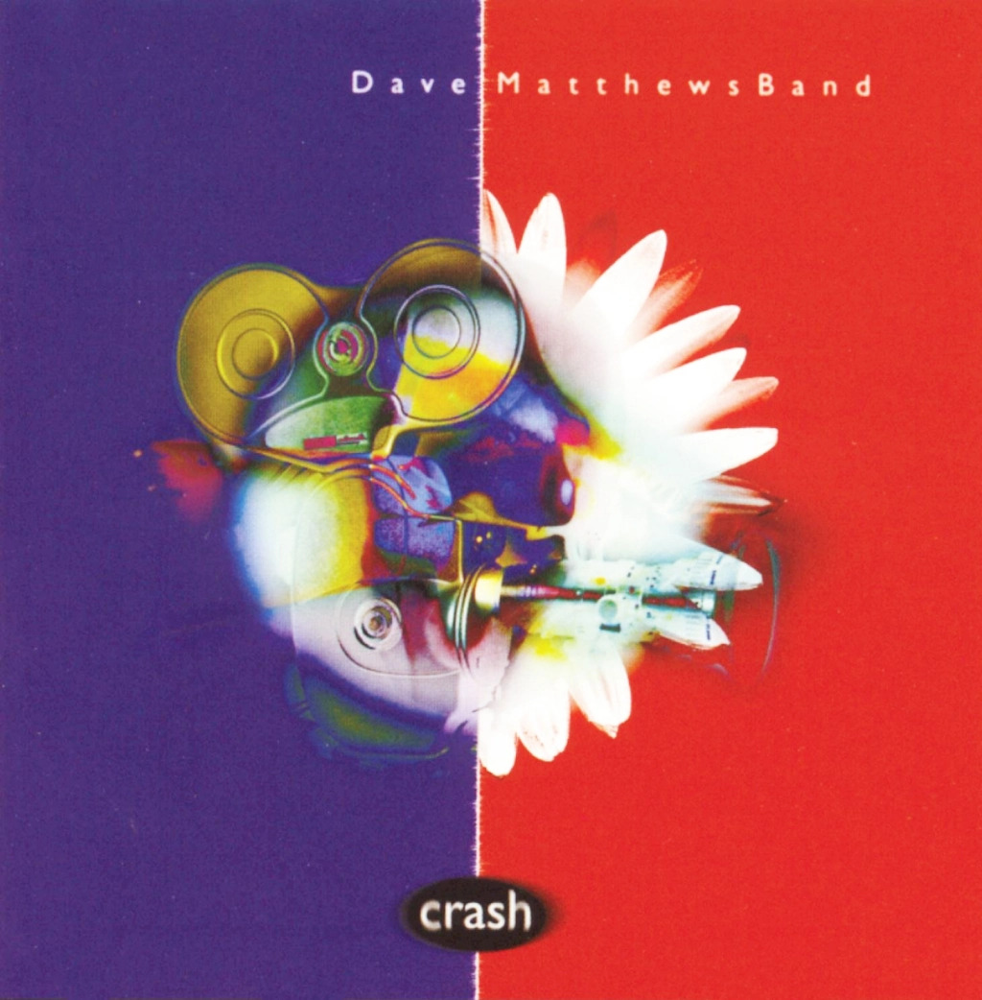
Crash
Crash is the second studio album by the American rock band Dave Matthews Band, released on April 30, 1996 by RCA Records.
By March 16, 2000, the album had sold seven million copies, and was certified septuple platinum by the Recording Industry Association of America. Crash is currently Dave Matthews Band's best-selling album.
1998
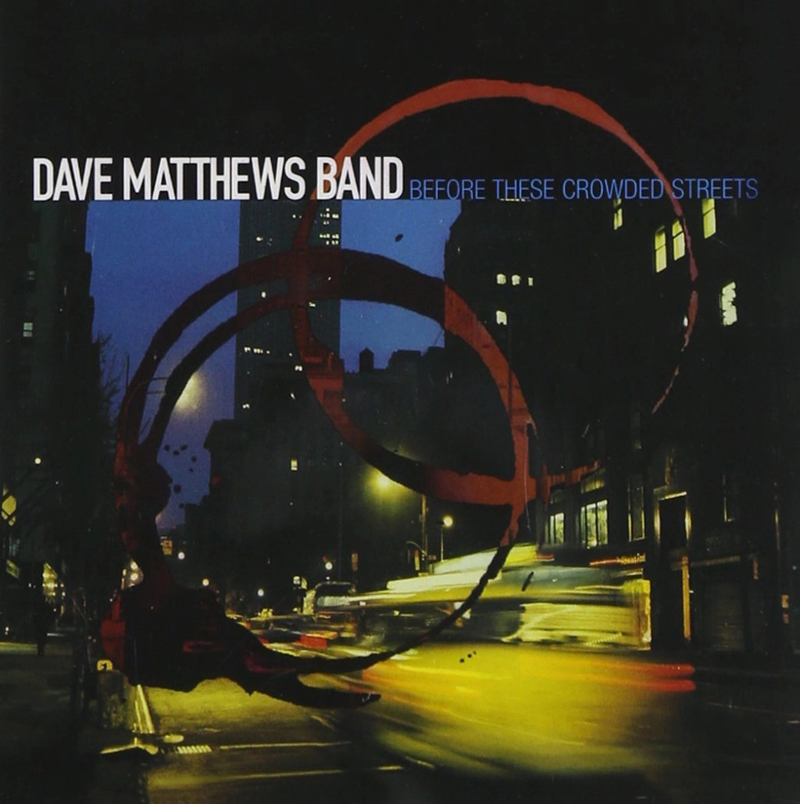
Before These Crowded Streets
Before These Crowded Streets is the third studio album by the American rock band Dave Matthews Band. It was released on April 28, 1998, through RCA Records. The album was produced by Steve Lillywhite, his last collaboration with the group until 2012's Away from the World. Recording took place at The Plant Recording Studios in Sausalito, California and Electric Lady Studios in New York.
2001
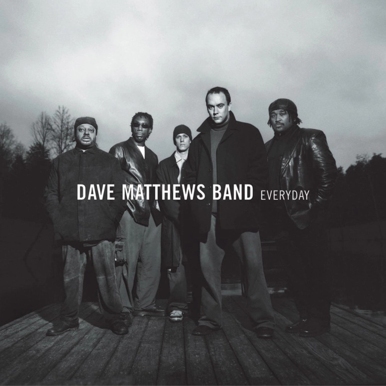
Everyday
Everyday is the fourth studio album by the American rock band Dave Matthews Band. It was released on February 27, 2001 through RCA Records. It is the band's first album to be produced by Glen Ballard, who also co-wrote all twelve of the album's songs with guitarist and vocalist Dave Matthews. The album marked a shift in the band's sound, prominently featuring electric guitar and concise pop arrangements.
Everyday was a commercial success, becoming the band's second number one album in the US. Three singles were released ("I Did It", "The Space Between", and "Everyday"), with "The Space Between" becoming the band's first top 40 hit in the US. Reviews were mixed; some critics disliked the band's change in sound while others welcomed the more accessible material.
2002
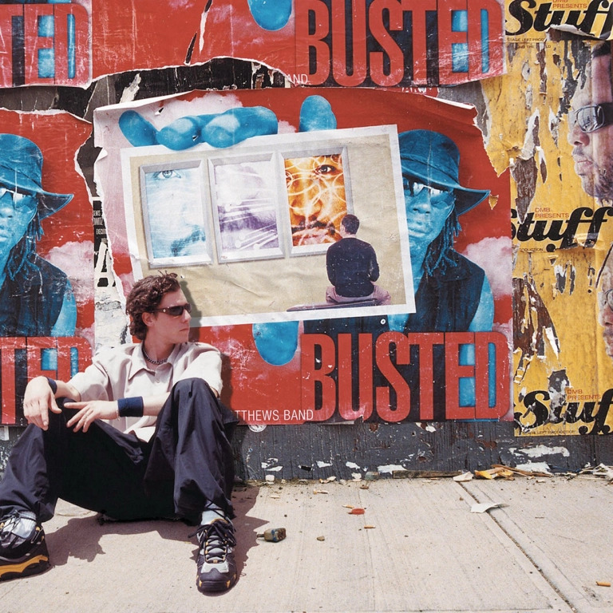
Busted Stuff
Busted Stuff is the fifth studio album by the American rock band Dave Matthews Band. It was released on July 16, 2002, through RCA Records. Much of the album's material was first recorded in 2000 during sessions with longtime producer Steve Lillywhite which were later scrapped. After the release of the Glen Ballard–produced Everyday in 2001, the band returned to the material, re-recording it with producer Stephen Harris.
Busted Stuff was a critical and commercial success. It became the band's third straight number one album in the U.S., and also topped the chart in Canada. "Where Are You Going", "Grace is Gone" and "Grey Street" were released as promotional singles; the former peaked at number 39 on the Billboard Hot 100. Reviews were positive, with many celebrating the return to the band's classic style after the more commercial sound of Everyday.
2005
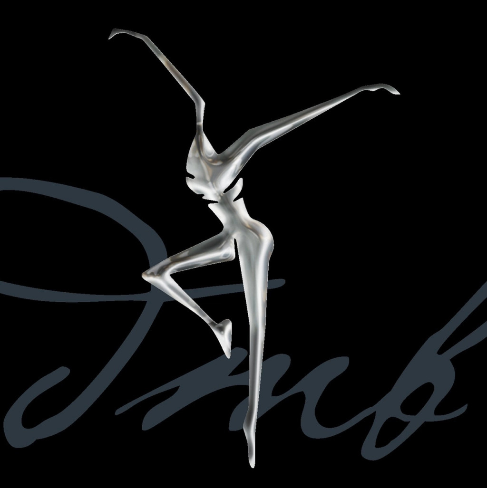
Stand Up
Stand Up is the sixth studio album by the American rock band Dave Matthews Band. It was released on May 10, 2005 through RCA Records. The album was primarily recorded at Haunted Hollow Studio in Charlottesville, Virginia and was the band's first album to be produced by Mark Batson. It is the band's last album to feature full participation from saxophonist LeRoi Moore before his death in 2008.
Stand Up was a commercial success, becoming the band's fourth consecutive album to reach number one on the Billboard 200. Four songs from the album—"American Baby", "Dreamgirl", "Everybody Wake Up (Our Finest Hour Arrives)", and "Smooth Rider"—were released as promotional singles, with the former becoming their highest-charting song, peaking at number 16 on the Billboard Hot 100. Critical reception was positive, with many praising the band's ability to update its sound with elements of soul and funk.
2009
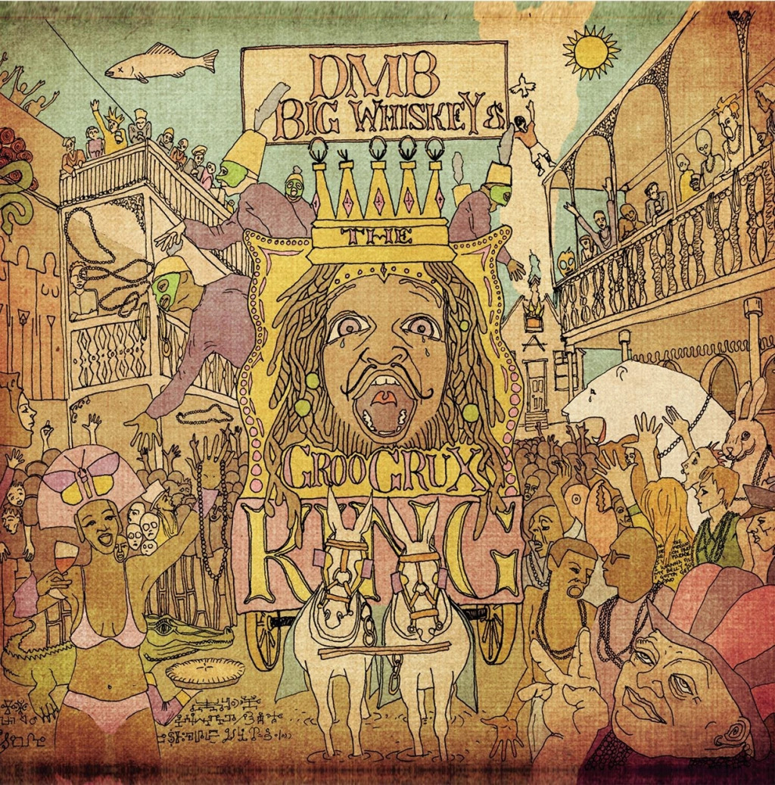
Big Whiskey & the Groogrux King
Big Whiskey & the GrooGrux King is the seventh studio album by the American rock band Dave Matthews Band, which was released by RCA Records on June 2, 2009.
It is the band's first release since the death of saxophonist LeRoi Moore, and it is their last album to feature Moore. Guitarist Tim Reynolds played on the album, marking his first recording with DMB since 1998's Before These Crowded Streets. Rashawn Ross makes his first appearance on a DMB studio album since joining as a regular touring member in 2006 as well as Jeff Coffin, who has taken Moore's role since June 2008. The album was the first to be produced by Rob Cavallo.
The album debuted at number one on the Billboard 200, selling 424,000 copies in its first week of release. This marked the group's fifth consecutive studio album to open with a sales week of at least 400,000 copies.
Exactly six months after its release, Big Whiskey & the GrooGrux King was nominated for two Grammy Awards: Best Rock Album and Album of the Year, but lost to Green Day's 21st Century Breakdown and Taylor Swift's Fearless, respectively.
2012
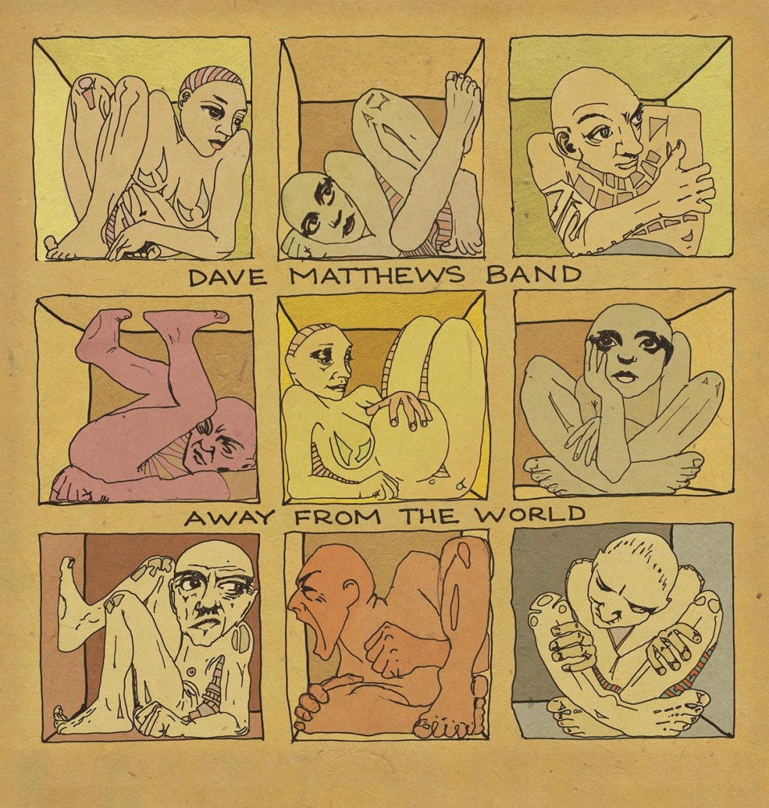
Away From the World
Away from the World is the eighth studio album by the American rock band Dave Matthews Band. It was released on September 11, 2012 through RCA Records. The album was primarily recorded at Studio Litho in Seattle, Washington from January to May 2012 and is the band's first to be produced by Steve Lillywhite since Before These Crowded Streets (1998). It is the band's last album to feature full participation from violinist Boyd Tinsley before his departure in 2018.
The album was a commercial success, becoming the band's sixth straight number-one album on the Billboard 200. Two singles were released—"Mercy" and "If Only"—which both found success on Adult Alternative radio. Critical reception was positive, with many reviewers praising the album's production, band interplay, and fusion of multiple genres, and multiple publications including the album on year-end lists of the best albums of 2012.
2018
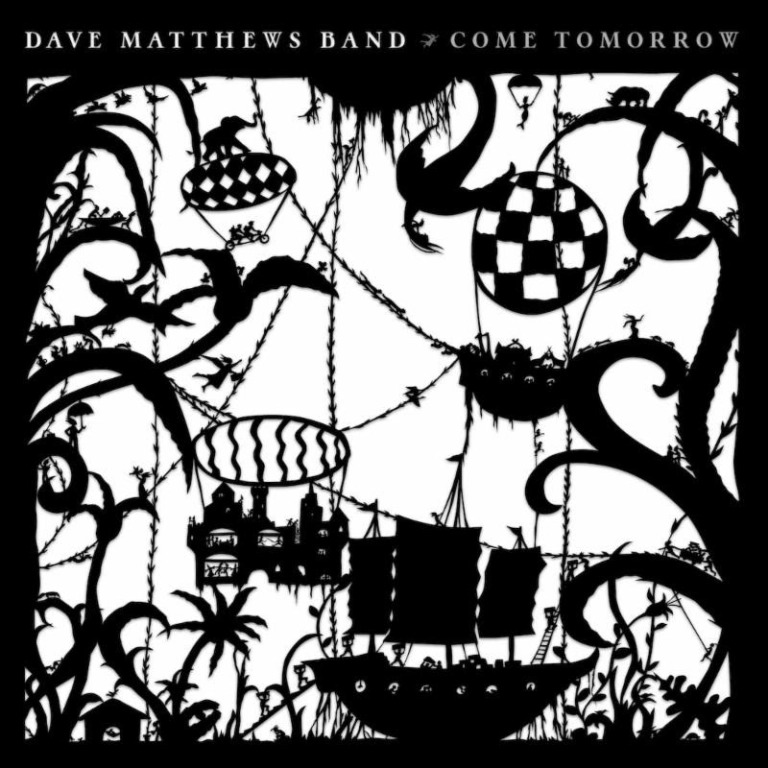
Come Tomorrow
Come Tomorrow is the ninth studio album by the American rock band Dave Matthews Band, and was released on June 8, 2018. The album is their first since 2012's Away from the World.
2023
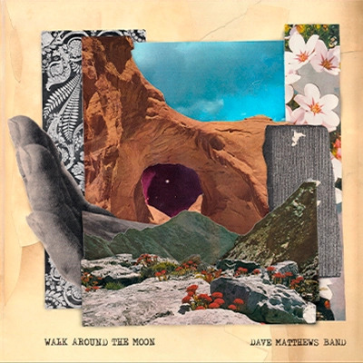
Walk Around the Moon
Walk Around the Moon is the tenth studio album by the American rock band Dave Matthews Band. It was released on May 19, 2023 through RCA Records. Recording primarily took place from August 2020 to September 2022; the track "Break Free" dates back to 2006.
The band's first studio album since Come Tomorrow (2018); it is their first release to feature keyboardist Arthur "Buddy" Strong.
The album was a commercial success, reaching the top 5 in the U.S.